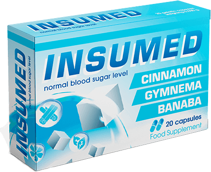
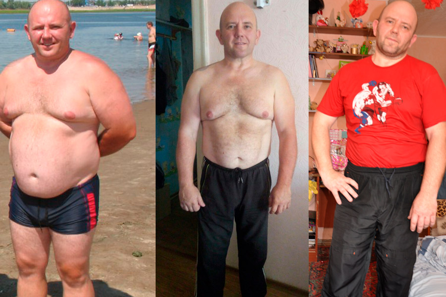

2-ES TÍPUSÚ CUKORBETEGSÉG. HOGYAN LEHET VELE ÉLNI?
Helló mindenkinek!
A nevem Simon. Nálam 43 évesen diagnosztizáltak a 2-es típusú cukorbetegséget. 45 évesen sikerült felépülnöm, és most mindenkinek el akarom mondani, hogy ez hogyan lehetséges otthon orvosi felügyelete nélkül.
Hogyan kezdődött ez az egész:
40 év felett gyorsabban jöttek fel rám a kilók. Nem éltem túl aktívan, így nem is jutott eszembe, hogy az elhízást a betegséghez társítsam.
Rossz alvás, gyakori és és állandó szomjúság, szájszárazság, de mindezt a túlsúly számlájára írtam. Amikor ehhez a tünetegyütteshez még hozzájött a látásromlás, akkor már kissé kétségbeestem, hiszen még nagyon fiatal vagyok ehhez!

A véletlen
Eltelt egy kis idő, a súlyom továbbra is nőtt, és továbbra is a sötétben tapogatóztam, legalábbis ami a betegségemet illeti. Egy eset viszont mindent megváltoztatott. Amikor elhelyezkedtem egy új helyen, át kellett esnem egy orvosi vizsgálaton, ahol megállapították, hogy az elhízást a cukorbetegség okozza.
Endokrinológushoz, táplálkozási szakértőhöz és szemészhez is beutaltak. Minden orvos ajánlásokat adott, és az összes ajnlás büntetésnek tűnt: maroknyi tabletta, szigorú diéta, a vércukorszint és a súly folyamatos ellenőrzése...
Őszintén próbáltam követni az orvosok ajánlásait. Szedtem a gyógyszereket, a minimálisra csökkentettem a káros ételeket, próbáltam sportolni.
Az élet ritmusának kényszerű megváltoztatásának bátorítania kellett volna, mert korábban soha nem szerettem a sportot, és különösen nem diétáztam. De egyáltalán nem éreztem jobban magam. Úgy éreztem magam, és mindezt csak azért tettem, mert én hihetetlenül féltem a cukorbetegség következményeitől.

Rémálmaim voltak arról, hogyan amputálták a lábaimat, hogy inzulinfüggővé váltam, és hogy injekciót kellett beadnom magamnak, amitől ugyancsak rettentően félek. Egy ponton rájöttem, hogy ha nem nyerem meg ezt a cukorbetegség elleni háborút, az legyőz engem. És nagyon mérges lettem.
Valami harag arra ösztönzött engem, hogy leadjak pár kilót, nemet mondjak a desszertre és a finom ételek helyett íztelen füveket és magokat tömjek magamba. A vércukorszintem újra normális lett, biztos voltam benne, hogy már a célvonalban vagyok!
Csalódás
Hat hónappal később újra elmentem az orvoshoz, hogy erőt gyűjtsek. De ahelyett, hogy inspirált volna és azt mondta volna, amit vártam, hogy «most már egészséges és folytathatja a normális életét», csak annyit mondott: A vércukorszintje a normán belül van, az előírás a régi, csak új gyógyszert fog kapni
Minden összetört bennem. Először is, a diéta lazítása nem is volt tervben. Másodszor, a fizetésem egyharmadát tablettákra költöttem. És most az orvos még drágább gyógyszereket írt fel nekem, és finoman utalt rá: ha élni akarok, akkor vegyem be.

A kétségbeesés hulláma csapott le rám. Az egész életemet tablettákkal leélni, korlátozni magam a finom ételek fogyasztásában, és az élet örömei nélkül élni, nem épp az volt, amit elképzeltem. Így egy rövid kétségbeesés után úgy döntöttem, hogy teszek az orvos ajánlásaira, és igazán elmerülök az életben.
Tibet, benyomások és gyógyulás
Az első dolog, amit szerettem volna: elutazni. Összeszedtem az összes megtakarításomat, és elutaztam Tibetbe. Az utazás közös felejthetetlen élményei mellett sok érdekes ismeretséget is szereztem, és közöttük az élet minden területéről akadtak emberek.
Egyikükről kiderült, hogy egy nagyon jó srác, aki egy pár évvel ezelőtt megszabadult a cukorbetegségtől klinikák és korlátozások nélkül. Dani gyermekkora óta cukorbeteg volt, és 35 évesen részt vett egy új gyógyszer klinikai tesztelésén, amelyet 10 évig fejlesztettek a vércukorszint eredményesebb és hosszan tartó csökkentéséhez.
A gyógyszer igazolta a hatékonyságát minden vizsgálat során, és piacra dobták az kereskedelmi név alatt futó készítményt. Az én új barátom ragaszkodott hozzá, hogy elvégezzek egy kúrát ezzel a készítménnyel. A szavai olyan meggyőzően hangzottak, hogy belementem.

A szer teljesen természetesnek bizonyult, tanúsítvánnyal rendelkezik, nincs semmilyen ellenjavallat vele kapcsoltban, ahogyan mellékhatásai sem, így nem volt mitől félni.
A gyógymód
Volt már tapasztalatom a különböző készítményekkel való gyógyulással kapcsolatban, így sok reményt nem fűztem hozzá. A kísérlet tisztasága érdekében direkt nem korlátoztam magam az étkezésben, de csodát sem vártam tőle. De a csoda mégis megtörtént.
A szedés első heteiben a cukorbetegség minden tünete alábbhagyott. Bár továbbra is sok vizet ittam, de már nem volt olyan érzésem, mintha egy Szahara lenne a számban. Elmúlt a szédülés és a fejfájás, és egyre jobban aludtam, és úgy általában is sokkal vidámabbnak éreztem magam.
Még a fogyás is megindult. Ez legalább annyira jó hír volt, mint amennyire rossz, mert a hirtelen nagy fogyás jelezheti a betegség súlyosbodását is. A félelmek miatt újra orvoshoz kellett fordulnom.

Amikor ismét orvosi vizsgálatra kellett mennem, átmentem az összes teszten, és az orvos egyszer csak azt mondta: “Egészséges, mint a bika. Mi a panasza?. Még a választ is összekevertem. Elmondtam, hogy második típusú cukorbetegséget diagnosztizáltak nálam, hogy követtem az orvosi utasításait, de nem volt semmi értelme. Elmentem nyaralni, majd egészségesen jöttem vissza.
A praxisom során ez egy ritka, de nem egyedi eset. Néha a cukorbetegségből teljesen felgyógyulnak. Ami a legfontosabb, többé ne eressze el magát. Megesküdtem, hogy figyelni fogok a táplálkozásra, és ügyetlenül viccelődtem, hogy remélem, nem találkozunk többé.
Azóta három hónap telt el. Néha mérem a cukrom éhgyomorra, étkezés után meg nagy lakomát követen is. Az évek során csak kétszer láttam a vércukorszint mérőn 6,9-et és 7,2-t. Így minden bizonnyal mondhatom, hogy megnyertem a cukorbetegség feletti harcot. És mindez az -nek köszönhető.
Hol kapható az
Néhányszor sikerült hamisítványokat venni a gyógyszertárakban, ezért nem tanácsolom senkinek, hogy gyógyszertárban szerezze be az -et. Jobb, ha az ember a gyártó honlapján vásárolja meg, ott biztosan eredeti termékhez jut. Mi több, most -ig érvényben van egy akció, miszerint az 50% kedvezménnyel vásárolható meg.


Mindenkinek jó egészséget kívánok!